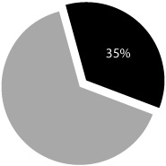

The Dream of Duser
Year: 2007
Team:
Fabe Dalen, Kalle Mäntsälä, Shanfan Huang
Coordinator:
Hannaliisa Hailahti, Paula Susitaival
Sponsor: Philips Lumalive
Special Thanks:
Roosa & Heidi Siirila
Lumalive technology features flexible arrays of colored LED fully integrated into the fabric - without compromising the softness or flexibility of the cloth. These light emitting textiles make it possible to create materials that can carry dynamic messages, graphics or multicolored surfaces.
Philips organized a study and competition project with School of Design and Media Lab to create innovative product concept that is passionate and engaging, and integrates technology into business potential.
Design Process
[-] Close
Delivery
1. Family of toys accompanied by a background story
+ The background story tells how these creatures ended up on Earth. Endless variations of the story can be created as TV series or using online media.
+
The children do not see the toys as merely a product, but also relate themselves with the toy's stories and personalities.
+ Different characters satisfy various preference of children.
+ Soft furry form & electric functions are related to children's needs of protection, care taking and entertainment
2. Long life-span toy that has extendable content
+ The toy is a friend growing up together with the children
+ The design concept focuses on comfort and content, for technology will lose its novel value
+
Additional content can be bought on memory cards, such as audiovisual stories, games
and educational quiz.
+
It is cheap to produce this kind of simple software, so it ends up
being very profitable.
+ Pressure sensor, speakers and other electronic components together enhanced the product functionality to develop emotional empathy with children
+ Using existing sensors and components, cheap to mass-produce
Scenario 1: Sleeping Companion
+ Children can choose between different soothing animations programmed into Lumalive panel to give them protection while sleeping. Display turns off automatically after 30 minutes of animation.+ The toys can be programmed to give a wake-up call at a certain time. It is non-annoying, using gentle voice and cheerful visual patterns to give a fresh start for the day.
Scenario 2: Story Teller
+ Parents and children can record audio stories for later listening.+ The toys are also equipped with ready-made stories, which feature mood-enhancing visual patterns. Additional stories can be bought as separate memory cards.
+ The story starts from a telescopic view, looking beyond constellations and spotting a little planet and its inhabitants. Duser, Niiny and Spacer set out an adventure to explore the universe, but an explosion accident ended them on earth, and they lost contact with each other.
+ Little girl Roosa and her mom walked by a toy store. She saw Duser in the display window and immediately recalled the story she watched on the TV. She recognized it was the unfortunate kid who came from a far faraway planet.
+ Roosa helped Duser to find his alien friends, meanwhile they developed trustful and touching friendship
+ In the end Duser decided to stay on earth with Roosa and her family.Global Toy Market

+ Over $100 bn market
+ 35% electronic toys & games
+ Traditional toys, like stuffed toys are rapidly losing markets to electronic toys.
+ The electronic toys segment annual growth is 15%.
+ Segment is expected to be worth $140 bn in 2015.
Target Group
Consumption of electronic toys is not tied to gender any more, which allows design of unisex toy family.
Value for 4-10 Years Old Kids
+ soft and warm
+ emotional response
+ "magic" features (display, audio, sensors)
Value for Parents
+ neat pleasing design
+ easy-to-use look & feel
+ takes care of children, leaving time for parents own activities
Differentiation
+ Lumalive technology offered a great platform to integrate electronics with soft stuffed toy, which can be both interactive and also "cuddle-able"
+ The market for electronic soft toy is still quite new and growing rapidly
+ Existing products, however, can hardly balance both: either sacrifice the electronic functions or compromise fabric quality
+ "Duser" toy family stress heavily on emotional design
+ Electronic function and content can be replaced or updated
+ Enriched and extendable functions create long life span
+ Stuffed toy manufacturers in China are struggling with rising material costs and shifting market emphasis to electronic toys. They will appreciate this kind of new business opportunities.
+ Consumer markets will mainly be in USA, Europe and Japan, where electronic toys currently are most popular. China is also a rising market.
+ With the strong background story and characters, the brand might turn into a world-wide success story. This in turn enables introducing all kinds of accessory products, such as music, T-shirt ...etc. to the market.